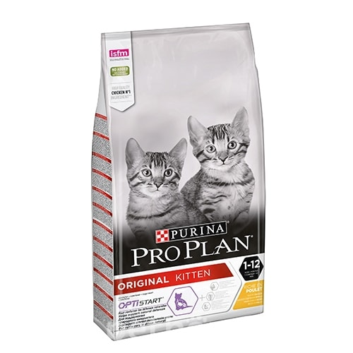

Purina Pro Plan Kitten (Junior) Chicken

Торгова марка - Purina Pro Plan
Країна-виробник - Італія, Франція
Група - Сухий корм
Вік кота - Для дорослих котів, для кошенят
Клас корму - Супер-преміум
Особливості потреби -
Беременные и кормящие
400 г
86,73 Грн
1,5 кг
270.52 Грн
10 кг
1942.99 Грн
Oпис
Спеціально адаптований до зниженим енергетичним потребам дорослих кастрованих котів і стерилізованих кішок. Корм забезпечує підтримку ідеальної кондиції, забезпечує нормальну регуляцію метаболізму глюкози і роботи сечовидільної системи. Корм Pro Plan After Care, основними інгредієнтами якого служить м'ясо кролика, є повнораціонним збалансованим харчуванням з високими смаковими характеристиками, забезпечуючи кастрованого кота поживними речовинами і зберігаючи його здоров'я.
Чому Варто придбати?
- Добре впливає на шкіру: вітамін А, лінолева кислота і цинк підвищують еластичність і зволоженість шкіри.
- Містить комплекс незамінних ненасичених жирних кислот для збільшення товщини і запобігання ламкості вовни.
- Спеціальне покриття гранул, ефективно знижує утворення зубного каменю до 40%.
- Підвищений вміст тваринних білків і знижений рівень вуглеводів регулює засвоєння глюкози.
- Містить корисні злакові крупи і рис для полегшення засвоюваності.
- Піклується про видільної системі: формула, що запобігає утворенню каменів, для збереження нормального функціонування сечовидільної системи і зниження ризику утворення струвітних відкладень, часто спостерігаються у кастрованих котів.
- Високий вміст білків і потужних антиоксидантів сприяє синтезу антитіл і захисту клітин організму.